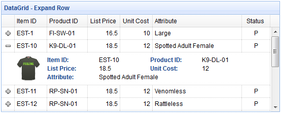

jQuery EasyUI complemento de cuadrícula de datos y árbol -Datagrid cuadrícula de datos
 Complementos de jQuery EasyUI
Complementos de jQuery EasyUI
Extiende desde $.fn.panel.defaults. Sobrescriba los defaults mediante $.fn.datagrid.defaults.
La cuadrícula de datos (datagrid) muestra datos en formato de tabla y proporciona un amplio soporte para seleccionar, ordenar, agrupar y editar datos. La cuadrícula de datos (datagrid) está diseñada para reducir el tiempo de desarrollo y no requiere que los desarrolladores tengan conocimientos específicos. Es ligera, pero rica en funciones. Sus características incluyen fusión de celdas, encabezados de varias columnas, columnas y pies de página congelados, etc.

Dependencias
- panel
- resizable
- linkbutton
- pagination
Uso
Cree una cuadrícula de datos (datagrid) a partir de un elemento de tabla existente, definiendo columnas, filas y datos en HTML.
<table class="easyui-datagrid">
<thead>
<tr>
<th data-options="field:'code'">Code</th>
<th data-options="field:'name'">Name</th>
<th data-options="field:'price'">Price</th>
</tr>
</thead>
<tbody>
<tr>
<td>001</td><td>name1</td><td>2323</td>
</tr>
<tr>
<td>002</td><td>name2</td><td>4612</td>
</tr>
</tbody>
</table>
Cree la cuadrícula de datos (datagrid) mediante la etiqueta <table>. Las etiquetas <th> anidadas definen las columnas de la tabla.
<table class="easyui-datagrid" style="width:400px;height:250px"
data-options="url:'datagrid_data.json',fitColumns:true,singleSelect:true">
<thead>
<tr>
<th data-options="field:'code',width:100">Code</th>
<th data-options="field:'name',width:100">Name</th>
<th data-options="field:'price',width:100,align:'right'">Price</th>
</tr>
</thead>
</table>
También puede crear la cuadrícula de datos (datagrid) con JavaScript.
<table id="dg"></table>
$('#dg').datagrid({
url:'datagrid_data.json',
columns:[[
{field:'code',title:'Code',width:100},
{field:'name',title:'Name',width:100},
{field:'price',title:'Price',width:100,align:'right'}
]]
});
Consulte datos mediante algunos parámetros.
$('#dg').datagrid('load', {
name: 'easyui',
address: 'ho'
});
Después de modificar los datos en el servidor, actualice los datos del front-end.
$('#dg').datagrid('reload'); // reload the current page data
Atributos del DataGrid
Estos atributos se extienden desde el panel (panel). A continuación se muestran los atributos añadidos para la cuadrícula de datos (datagrid).
| Nombre | Tipo | Descripción | Valor por defecto |
|---|---|---|---|
| columns | array | Objeto de configuración de las columnas de la cuadrícula de datos (datagrid). Para más detalles, consulte los atributos de columna (column). | undefined |
| frozenColumns | array | Igual que los atributos de columna (column), pero estas columnas se congelarán a la izquierda. | undefined |
| fitColumns | boolean | Si se establece en true, se ampliará o reducirá automáticamente el tamaño de las columnas para ajustarse al ancho de la cuadrícula y evitar el desplazamiento horizontal. | false |
| resizeHandle | string | Ajusta la posición de las columnas. Los valores disponibles son: 'left', 'right', 'both'. Cuando se establece en 'right', el usuario puede ajustar la columna arrastrando el borde derecho del encabezado de la columna. Este atributo está disponible desde la versión 1.3.2. |
right |
| autoRowHeight | boolean | Define si se establece la altura de la fila según el contenido de la fila. Si se establece en false, puede mejorar el rendimiento de carga. | true |
| toolbar | array,selector | Barra de herramientas del encabezado del panel de la cuadrícula de datos (datagrid). Los valores posibles son: 1. Un array; cada opción de herramienta es igual que el botón de enlace (linkbutton). 2. Un selector; solo la barra de herramientas. Defina la barra de herramientas dentro de la etiqueta <div>:
$('#dg').datagrid({
toolbar: '#tb'
});
<div id="tb">
<a href="../index.html" class="easyui-linkbutton" data-options="iconCls:'icon-edit',plain:true"></a>
<a href="../index.html" class="easyui-linkbutton" data-options="iconCls:'icon-help',plain:true"></a>
</div>
Defina la barra de herramientas mediante un array:
$('#dg').datagrid({
toolbar: [{
iconCls: 'icon-edit',
handler: function(){alert('edit')}
},'-',{
iconCls: 'icon-help',
handler: function(){alert('help')}
}]
});
|
null |
| striped | boolean | Si se establece en true, las filas se muestran con rayas (es decir, las filas pares e impares usan diferentes colores de fondo). | false |
| method | string | El tipo de método (method) para solicitar datos remotos. | post |
| nowrap | boolean | Si se establece en true, los datos se muestran en una sola línea. Establecerlo en true puede mejorar el rendimiento de carga. | true |
| idField | string | Indica qué campo es el campo identificador. | null |
| url | string | La URL para solicitar datos desde un sitio remoto. | null |
| data | array,object | Los datos que se van a cargar. Este atributo está disponible desde la versión 1.3.2. Ejemplo de código:
$('#dg').datagrid({
data: [
{f1:'value11', f2:'value12'},
{f1:'value21', f2:'value22'}
]
});
|
null |
| loadMsg | string | Mensaje de aviso que se muestra al cargar datos desde un sitio remoto. | Processing, please wait … |
| pagination | boolean | Si se establece en true, se muestra la barra de herramientas de paginación en la parte inferior de la cuadrícula de datos (datagrid). | false |
| rownumbers | boolean | Si se establece en true, se muestra una columna con números de fila. | false |
| singleSelect | boolean | Si se establece en true, solo se permite seleccionar una fila. | false |
| checkOnSelect | boolean | Si se establece en true, cuando el usuario hace clic en una fila, se marcará o desmarcará la casilla de verificación. Si se establece en false, la casilla solo se marcará o desmarcará cuando el usuario haga clic en la casilla de verificación. Este atributo está disponible desde la versión 1.3. |
true |
| selectOnCheck | boolean | Si se establece en true, hacer clic en la casilla de verificación seleccionará la fila. Si se establece en false, seleccionar la fila no activará la casilla de verificación. Este atributo está disponible desde la versión 1.3. |
true |
| pagePosition | string | Define la posición de la barra de paginación. Los valores disponibles son: 'top', 'bottom', 'both'. Este atributo está disponible desde la versión 1.3. |
bottom |
| pageNumber | number | Cuando se establece la propiedad pagination, inicializa el número de página. | 1 |
| pageSize | number | Cuando se establece la propiedad pagination, inicializa el tamaño de página. | 10 |
| pageList | array | Cuando se establece la propiedad pagination, inicializa la lista de selección de tamaños de página. | [10,20,30,40,50] |
| queryParams | object | Parámetros adicionales que se envían al solicitar datos remotos. Ejemplo de código:
$('#dg').datagrid({
queryParams: {
name: 'easyui',
subject: 'datagrid'
}
});
|
{} |
| sortName | string | Define las columnas que se pueden ordenar. | null |
| sortOrder | string | Define el orden de clasificación de la columna; solo puede ser 'asc' o 'desc'. | asc |
| multiSort | boolean | Define si se habilita la clasificación por múltiples columnas. Este atributo está disponible desde la versión 1.3.4. | false |
| remoteSort | boolean | Define si los datos se ordenan desde el servidor. | true |
| showHeader | boolean | Define si se muestra la fila de encabezado. | true |
| showFooter | boolean | Define si se muestra el pie de página. | false |
| scrollbarSize | number | El ancho de la barra de desplazamiento (cuando la barra de desplazamiento es vertical) o la altura de la barra de desplazamiento (cuando la barra de desplazamiento es horizontal). | 18 |
| rowStyler | function | Devuelve un estilo como 'background:red'. Esta función requiere dos parámetros: rowIndex: el índice de la fila, comienza desde 0. rowData: el registro correspondiente de esa fila. Ejemplo de código:
$('#dg').datagrid({
rowStyler: function(index,row){
if (row.listprice>80){
return 'background-color:#6293BB;color:#fff;'; // return inline style
// the function can return predefined css class and inline style
// return {class:'r1', style:{'color:#fff'}};
}
}
});
|
|
| loader | function | Define cómo cargar datos desde el servidor remoto. Devolver false cancela la acción. Esta función tiene los siguientes parámetros: param: el objeto de parámetros que se pasará al servidor remoto. success(data): la función de devolución de llamada que se invoca cuando la recuperación de datos es exitosa. error(): la función de devolución de llamada que se invoca cuando falla la recuperación de datos. |
json loader |
| loadFilter | function | Devuelve los datos filtrados que se mostrarán. Esta función tiene un parámetro 'data' que representa los datos originales. Puede convertir los datos originales al formato de datos estándar. Esta función debe devolver un objeto de datos estándar que contenga las propiedades 'total' y 'rows'. Ejemplo de código:
// removing 'd' object from asp.net web service json output
$('#dg').datagrid({
loadFilter: function(data){
if (data.d){
return data.d;
} else {
return data;
}
}
});
|
|
| editors | object | Define el editor cuando se edita una fila. | predefined editors |
| view | object | Define la vista de la cuadrícula de datos (datagrid). | default view |
Atributos de la columna (Column)
La columna (Column) del DataGrid es un objeto de tipo array; cada uno de sus elementos también es un array. Los elementos del array de elementos son objetos de configuración que definen los campos de cada columna.
Ejemplo de código:
columns:[[
{field:'itemid',title:'Item ID',rowspan:2,width:80,sortable:true},
{field:'productid',title:'Product ID',rowspan:2,width:80,sortable:true},
{title:'Item Details',colspan:4}
],[
{field:'listprice',title:'List Price',width:80,align:'right',sortable:true},
{field:'unitcost',title:'Unit Cost',width:80,align:'right',sortable:true},
{field:'attr1',title:'Attribute',width:100},
{field:'status',title:'Status',width:60}
]]
| Nombre | Tipo | Descripción | Valor por defecto |
|---|---|---|---|
| title | string | El texto del título de la columna. | undefined |
| field | string | El nombre del campo de la columna. | undefined |
| width | number | El ancho de la columna. Si no se define, el ancho se expandirá automáticamente para ajustarse a su contenido. No definir el ancho reducirá el rendimiento. | undefined |
| rowspan | number | Indica cuántas filas ocupa una celda. | undefined |
| colspan | number | Indica cuántas columnas ocupa una celda. | undefined |
| align | string | Indica cómo alinear los datos de la columna; puede ser 'left', 'right' o 'center'. | undefined |
| halign | string | Indica cómo alinear el encabezado de la columna. Los valores posibles son: 'left', 'right', 'center'. Si no se asigna ningún valor, la alineación del encabezado coincidirá con la alineación de datos definida mediante el atributo 'align'. Este atributo está disponible desde la versión 1.3.2. | undefined |
| sortable | boolean | Si se establece en true, se permite que esta columna se ordene. | undefined |
| order | string | El orden de clasificación predeterminado; solo puede ser 'asc' o 'desc'. Este atributo está disponible desde la versión 1.3.2. | undefined |
| resizable | boolean | Si se establece en true, se permite que esta columna sea redimensionable. | undefined |
| fixed | boolean | Si se establece en true, se evitará el ajuste de ancho cuando 'fitColumns' esté establecido en true. | undefined |
| hidden | boolean | Si se establece en true, se oculta esta columna. | undefined |
| checkbox | boolean | Si se establece en true, se muestra una casilla de verificación. La casilla de verificación tiene un ancho fijo. | undefined |
| formatter | function | La función de formato de celda; requiere tres parámetros: value: el valor del campo. rowData: los datos del registro de la fila. rowIndex: el índice de la fila. Ejemplo de código:
$('#dg').datagrid({
columns:[[
{field:'userId',title:'User', width:80,
formatter: function(value,row,index){
if (row.user){
return row.user.name;
} else {
return value;
}
}
}
]]
});
|
undefined |
| styler | function | La función de estilo de celda; devuelve una cadena de estilo para personalizar el estilo de la celda, por ejemplo 'background:red'. Esta función requiere tres parámetros: value: el valor del campo. rowData: los datos del registro de la fila. rowIndex: el índice de la fila. Ejemplo de código:
$('#dg').datagrid({
columns:[[
{field:'listprice',title:'List Price', width:80, align:'right',
styler: function(value,row,index){
if (value < 20){
return 'background-color:#ffee00;color:red;';
// the function can return predefined css class and inline style
// return {class:'c1',style:'color:red'}
}
}
}
]]
});
|
undefined |
| sorter | function | Función de clasificación para campos personalizados utilizada en la clasificación local; requiere dos parámetros: a: el valor del primer campo. b: el valor del segundo campo. Ejemplo de código:
$('#dg').datagrid({
remoteSort: false,
columns: [[
{field:'date',title:'Date',width:80,sortable:true,align:'center',
sorter:function(a,b){
a = a.split('/');
b = b.split('/');
if (a[2] == b[2]){
if (a[0] == b[0]){
return (a[1]>b[1]?1:-1);
} else {
return (a[0]>b[0]?1:-1);
}
} else {
return (a[2]>b[2]?1:-1);
}
}
}
]]
});
|
undefined |
| editor | string,object | Indica el tipo de edición. Cuando es una cadena (string), se refiere al tipo de edición; cuando es un objeto (object), contiene dos propiedades: type: cadena, tipo de edición. Tipos posibles: text, textarea, checkbox, numberbox, validatebox, datebox, combobox, combotree. options: objeto, opciones del editor correspondientes al tipo de edición. |
undefined |
Editor (Editor)
Sobrescriba los defaults predeterminados mediante $.fn.datagrid.defaults.editors.
Cada editor tiene los siguientes comportamientos:
| Nombre | Parámetros | Descripción |
|---|---|---|
| init | container, options | Inicializa el editor y devuelve el objeto de destino. |
| destroy | target | Destruye el editor si es necesario. |
| getValue | target | Obtiene el valor del texto del editor. |
| setValue | target , value | Establece el valor del editor. |
| resize | target , width | Ajusta el tamaño del editor si es necesario. |
Por ejemplo, el editor de texto (text editor) se define de la siguiente manera:
$.extend($.fn.datagrid.defaults.editors, {
text: {
init: function(container, options){
var input = $('<input type="text" class="datagrid-editable-input">').appendTo(container);
return input;
},
destroy: function(target){
$(target).remove();
},
getValue: function(target){
return $(target).val();
},
setValue: function(target, value){
$(target).val(value);
},
resize: function(target, width){
$(target)._outerWidth(width);
}
}
});
Vista del DataGrid (DataGrid View)
Sobrescriba los defaults predeterminados mediante $.fn.datagrid.defaults.view.
La vista (view) es un objeto que le indica a la cuadrícula de datos (datagrid) cómo presentar las filas. Este objeto debe definir las siguientes funciones:
| Nombre | Parámetros | Descripción |
|---|---|---|
| render | target, container, frozen | Se llama cuando se cargan los datos. target: objeto DOM, objeto de la cuadrícula de datos (datagrid). container: contenedor de las filas. frozen: indica si se debe presentar el contenedor congelado. |
| renderFooter | target, container, frozen | Esta es la función de opciones para presentar el pie de fila. |
| renderRow | target, fields, frozen, rowIndex, rowData | Esta es la función de opciones que será llamada por la función render. |
| refreshRow | target, rowIndex | Define cómo actualizar la fila especificada. |
| onBeforeRender | target, rows | Se activa antes de que la vista sea presentada. |
| onAfterRender | target | Se activa después de que la vista sea presentada. |
Eventos
Estos eventos se extienden desde el panel (panel). A continuación se presentan los eventos agregados para la cuadrícula de datos (datagrid).
| Nombre | Parámetros | Descripción |
|---|---|---|
| onLoadSuccess | data | Se activa cuando los datos se cargan correctamente. |
| onLoadError | none | Se activa cuando ocurre algún error al cargar datos remotos. |
| onBeforeLoad | param | Se activa antes de enviar la solicitud de carga de datos; si se devuelve false, la acción de carga se cancela. |
| onClickRow | rowIndex, rowData | Se activa cuando el usuario hace clic en una fila. Los parámetros incluyen: rowIndex: índice de la fila en la que se hizo clic, comenzando desde 0 rowData: registro correspondiente a la fila en la que se hizo clic |
| onDblClickRow | rowIndex, rowData | Se activa cuando el usuario hace doble clic en una fila. Los parámetros incluyen: rowIndex: índice de la fila en la que se hizo doble clic, comenzando desde 0 rowData: registro correspondiente a la fila en la que se hizo doble clic |
| onClickCell | rowIndex, field, value | Se activa cuando el usuario hace clic en una celda. |
| onDblClickCell | rowIndex, field, value | Se activa cuando el usuario hace doble clic en una celda. Ejemplo de código:
// when double click a cell, begin editing and make the editor get focus
$('#dg').datagrid({
onDblClickCell: function(index,field,value){
$(this).datagrid('beginEdit', index);
var ed = $(this).datagrid('getEditor', {index:index,field:field});
$(ed.target).focus();
}
});
|
| onSortColumn | sort, order | Se activa cuando el usuario ordena una columna. Los parámetros incluyen: sort: nombre del campo de la columna ordenada order: orden de la columna ordenada |
| onResizeColumn | field, width | Se activa cuando el usuario ajusta el tamaño de una columna. |
| onSelect | rowIndex, rowData | Se activa cuando el usuario selecciona una fila. Los parámetros incluyen: rowIndex: índice de la fila seleccionada, comenzando desde 0 rowData: registro correspondiente a la fila seleccionada |
| onUnselect | rowIndex, rowData | Se activa cuando el usuario deselecciona una fila. Los parámetros incluyen: rowIndex: índice de la fila deseleccionada, comenzando desde 0 rowData: registro correspondiente a la fila deseleccionada |
| onSelectAll | rows | Se activa cuando el usuario selecciona todas las filas. |
| onUnselectAll | rows | Se activa cuando el usuario deselecciona todas las filas. |
| onCheck | rowIndex,rowData | Se activa cuando el usuario marca una fila. Los parámetros incluyen: rowIndex: índice de la fila marcada, comenzando desde 0 rowData: registro correspondiente a la fila marcada Este evento está disponible desde la versión 1.3. |
| onUncheck | rowIndex,rowData | Se activa cuando el usuario desmarca una fila. Los parámetros incluyen: rowIndex: índice de la fila desmarcada, comenzando desde 0 rowData: registro correspondiente a la fila desmarcada Este evento está disponible desde la versión 1.3. |
| onCheckAll | rows | Se activa cuando el usuario marca todas las filas. Este evento está disponible desde la versión 1.3. |
| onUncheckAll | rows | Se activa cuando el usuario desmarca todas las filas. Este evento está disponible desde la versión 1.3. |
| onBeforeEdit | rowIndex, rowData | Se activa cuando el usuario comienza a editar una fila. Los parámetros incluyen: rowIndex: índice de la fila en edición, comenzando desde 0 rowData: registro correspondiente a la fila en edición |
| onAfterEdit | rowIndex, rowData, changes | Se activa cuando el usuario termina de editar una fila. Los parámetros incluyen: rowIndex: índice de la fila en edición, comenzando desde 0 rowData: registro correspondiente a la fila en edición changes: pares de campo/valor modificados |
| onCancelEdit | rowIndex, rowData | Se activa cuando el usuario cancela la edición de una fila. Los parámetros incluyen: rowIndex: índice de la fila en edición, comenzando desde 0 rowData: registro correspondiente a la fila en edición |
| onHeaderContextMenu | e, field | Se activa cuando se hace clic derecho en el encabezado de la cuadrícula de datos (datagrid). |
| onRowContextMenu | e, rowIndex, rowData | Se activa cuando se hace clic derecho en una fila. |
Métodos
| Nombre | Parámetros | Descripción |
|---|---|---|
| options | none | Devuelve el objeto de opciones (options). |
| getPager | none | Devuelve el objeto de paginación (pager). |
| getPanel | none | Devuelve el objeto de panel (panel). |
| getColumnFields | frozen | Devuelve los campos de las columnas; si frozen se establece en true, se devuelven los campos de las columnas congeladas. Ejemplo de código:
var opts = $('#dg').datagrid('getColumnFields'); // get unfrozen columns
var opts = $('#dg').datagrid('getColumnFields', true); // get frozen columns
|
| getColumnOption | field | Devuelve las opciones de la columna especificada. |
| resize | param | Ajusta el tamaño y el diseño. |
| load | param | Carga y muestra las filas de la primera página. Si se especifica el parámetro 'param', reemplazará la propiedad queryParams. Normalmente, este método se invoca para cargar nuevos datos desde el servidor pasando algunos parámetros de consulta.
$('#dg').datagrid('load',{
code: '01',
name: 'name01'
});
|
| reload | param | Recarga las filas, igual que el método load, pero permanece en la página actual. |
| reloadFooter | footer | Recarga las filas del pie. Ejemplo de código:
// update footer row values and then refresh
var rows = $('#dg').datagrid('getFooterRows');
rows[0]['name'] = 'new name';
rows[0]['salary'] = 60000;
$('#dg').datagrid('reloadFooter');
// update footer rows with new data
$('#dg').datagrid('reloadFooter',[
{name: 'name1', salary: 60000},
{name: 'name2', salary: 65000}
]);
|
| loading | none | Muestra el estado de carga. |
| loaded | none | Oculta el estado de carga. |
| fitColumns | none | Hace que las columnas se expandan/contraigan automáticamente para adaptarse al ancho de la cuadrícula de datos (datagrid). |
| fixColumnSize | field | Fija el tamaño de las columnas. Si no se establece el parámetro 'field', el tamaño de todas las columnas quedará fijo. Ejemplo de código:
$('#dg').datagrid('fixColumnSize', 'name'); // fix the 'name' column size
$('#dg').datagrid('fixColumnSize'); // fix all columns size
|
| fixRowHeight | index | Fija la altura de la fila especificada. Si no se establece el parámetro 'index', la altura de todas las filas quedará fija. |
| freezeRow | index | Congela la fila especificada para que estas filas congeladas se muestren siempre en la parte superior cuando la cuadrícula de datos (datagrid) se desplace hacia abajo. Este método está disponible desde la versión 1.3.2. |
| autoSizeColumn | field | Ajusta el ancho de la columna para que se adapte al contenido. Este método está disponible desde la versión 1.3. |
| loadData | data | Carga datos locales; las filas antiguas se eliminarán. |
| getData | none | Devuelve los datos cargados. |
| getRows | none | Devuelve las filas de la página actual. |
| getFooterRows | none | Devuelve las filas del pie. |
| getRowIndex | row | Devuelve el índice de la fila especificada. El parámetro row puede ser un registro de fila o el valor de un campo id. |
| getChecked | none | Devuelve todas las filas seleccionadas mediante casillas de verificación. Este método está disponible desde la versión 1.3. |
| getSelected | none | Devuelve la primera fila seleccionada o null. |
| getSelections | none | Devuelve todas las filas seleccionadas; cuando no hay registros seleccionados, devuelve un arreglo vacío. |
| clearSelections | none | Limpia todas las selecciones. |
| clearChecked | none | Limpia todas las filas marcadas. Este método está disponible desde la versión 1.3.2. |
| scrollTo | index | Se desplaza hasta la fila especificada. Este método está disponible desde la versión 1.3.3. |
| highlightRow | index | Resalta una fila. Este método está disponible desde la versión 1.3.3. |
| selectAll | none | Selecciona todas las filas de la página actual. |
| unselectAll | none | Deselecciona todas las filas de la página actual. |
| selectRow | index | Selecciona una fila, el índice de fila comienza desde 0. |
| selectRecord | idValue | Selecciona una fila pasando el valor de id como parámetro. |
| unselectRow | index | Deselecciona una fila. |
| checkAll | none | Marca todas las filas de la página actual. Este método está disponible desde la versión 1.3. |
| uncheckAll | none | Desmarca todas las filas de la página actual. Este método está disponible desde la versión 1.3. |
| checkRow | index | Marca una fila, el índice de fila comienza desde 0. Este método está disponible desde la versión 1.3. |
| uncheckRow | index | Desmarca una fila, el índice de fila comienza desde 0. Este método está disponible desde la versión 1.3. |
| beginEdit | index | Comienza a editar una fila. |
| endEdit | index | Finaliza la edición de una fila. |
| cancelEdit | index | Cancela la edición de una fila. |
| getEditors | index | Obtiene el editor de la fila especificada. Cada editor tiene las siguientes propiedades: actions: las acciones que puede realizar el editor, iguales a las definiciones del editor. target: objeto jQuery del editor de destino. field: nombre del campo. type: el tipo de editor, por ejemplo: 'text', 'combobox', 'datebox', etc. |
| getEditor | options | Obtener el editor especificado, el parámetro options contiene dos propiedades: index: el índice de la fila. field: el nombre del campo. Ejemplo de código:
// get the datebox editor and change its value
var ed = $('#dg').datagrid('getEditor', {index:1,field:'birthday'});
$(ed.target).datebox('setValue', '5/4/2012');
|
| refreshRow | index | Actualizar una fila. |
| validateRow | index | Validar la fila especificada, devuelve true si es válida. |
| updateRow | param | Actualizar la fila especificada, el parámetro param incluye las siguientes propiedades: index: el índice de la fila a actualizar. row: los nuevos datos de la fila. Ejemplo de código:
$('#dg').datagrid('updateRow',{
index: 2,
row: {
name: 'new name',
note: 'new note message'
}
});
|
| appendRow | row | Agregar una nueva fila. La nueva fila se añadirá en la última posición:
$('#dg').datagrid('appendRow',{
name: 'new name',
age: 30,
note: 'some messages'
});
|
| insertRow | param | Insertar una nueva fila, el parámetro param incluye las siguientes propiedades: index: el índice de la fila insertada, si no está definido, se agrega la nueva fila. row: los datos de la fila. Ejemplo de código:
// insert a new row at second row position
$('#dg').datagrid('insertRow',{
index: 1, // index start with 0
row: {
name: 'new name',
age: 30,
note: 'some messages'
}
});
|
| deleteRow | index | Eliminar una fila. |
| getChanges | type | Obtener las filas modificadas desde el último envío, el parámetro type indica el tipo de filas modificadas, los valores posibles son: inserted, deleted, updated, etc. Cuando el parámetro type no está asignado, devuelve todas las filas modificadas. |
| acceptChanges | none | Confirmar todos los datos modificados desde que se cargaron o desde la última llamada a acceptChanges. |
| rejectChanges | none | Revertir todos los datos modificados desde su creación o desde la última llamada a acceptChanges. |
| mergeCells | options | Combinar algunas celdas en una sola celda, el parámetro options incluye las siguientes características: index: el índice de la columna. field: el nombre del campo. rowspan: el número de filas que abarca la combinación. colspan: el número de columnas que abarca la combinación. |
| showColumn | field | Mostrar la columna especificada. |
| hideColumn | field | Ocultar la columna especificada. |
Plugin jQuery EasyUI Otras extensiones
Haz clic para compartir notas
<p style="font-size:14px;">¡La nota debe ser una extensión del contenido de este artículo!</p><br> <p style="font-size:12px;"><a href="../tougao.html" target="_blank">Para enviar un artículo, haz clic aquí</a></p> <p style="font-size:14px;"><a href="../w3cnote/runoob-user-test-intro.html" target="_blank">Cómo obtener el código de invitación de registro</a></p> <h3 class="text-muted"><i class="fa fa-info-circle" aria-hidden="true"></i> Antes de compartir notas debes <a href=";.html" class="runoob-pop">iniciar sesión</a>!</h3> <p><a href="../w3cnote/runoob-user-test-intro.html" target="_blank">Cómo obtener el código de invitación de registro</a></p>